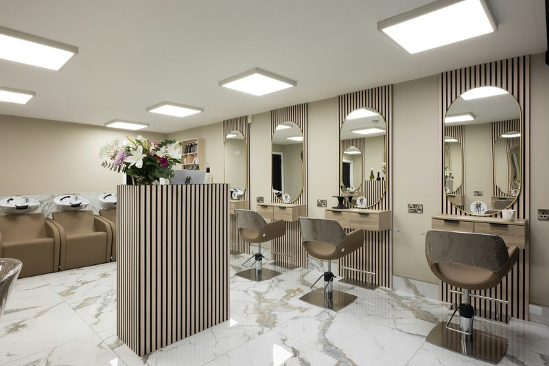

Look Good, Feel Golden
Welcome to Daisy Blooms Salon, a neighbourhood favourite for haircuts, styling, colouring, and beauty treatments. Our team takes the time to understand exactly what you want, so you walk out feeling like the best version of yourself.
Book an EnquiryOur Services
-
Haircuts
Precision cuts and trims for every hair type and length.
-
Styling
Blow-outs, braids, and special-occasion styling.
-
Colouring
Full colour, balayage, and creative colour transformations.
-
Beauty Treatments
Deep conditioning, scalp treatments, and brow shaping.
Our Work
"Daisy always knows exactly what I want before I even finish explaining it. Best haircut I've had in years." — Kopano R.